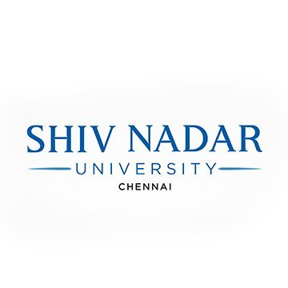

About
I'm a Machine Learning Engineer with expertise in computer vision, 3D scene understanding, and multimodal learning. Currently pursuing a Master's in Computer Vision at Carnegie Mellon University, I’m passionate about enabling robots to perceive and understand the world visually.
3D Vision & NeRFs
Neural radiance fields, 3D Gaussian splatting, and multi-view reconstruction
Multimodal Learning
Vision-language models, Graph-RAG retrieval, and cross-modal reasoning
Generative Models
Diffusion models, video synthesis, and controllable image generation
Robust Visual Reasoning
Low-light enhancement, noise-robust perception, and depth estimation
Education
Carnegie Mellon University
Master in Computer Vision
Aug 2025 – Dec 2026
GPA: 3.8/4.0
Relevant Coursework: Advanced Computer Vision, Visual Learning and Recognition, Learning for 3D Vision

Shiv Nadar University Chennai
Bachelor of Technology in Artificial Intelligence and Data Science
Aug 2021 – Jul 2025
GPA: 8.8/10.0
Relevant Coursework: Machine Learning, Deep Learning, Linear Algebra, Image and Video Processing, Natural Language Processing, Discrete Mathematics, Optimization Techniques
Experience
Undergraduate Research Intern
Indian Institute of Technology Madras · Advised by Dr. Kaushik Mitra
- Co-developed a generalizable, noise-robust NeRF model for lensless imaging using a transformer-based architecture for 3D scene reconstruction from noisy optical inputs.
- Curated the first multi-view lensless dataset and achieved 22.8 PSNR, surpassing SOTA by +2.6 PSNR on nerf_llff, ibrnet_collected, and real_iconic_noface benchmarks.
- Designed a stereo image synthesis pipeline for rocket launch data with encoder-decoder disparity warping, plus gated convolution and FFT inpainting to support ISRO's 3D visualization workflows.
Undergraduate Research Intern
Shiv Nadar University Chennai · Advised by Dr. Chandrakala
- Proposed U-DALLIE, a UNet-based depth realization module for low-light image enhancement, boosting clarity and color retention.
- Achieved PSNR 25.31 on the LOL dataset, outperforming standard enhancement networks by +3.19 PSNR.
Intern Engineer
COVLANT.AI · DeepGenAI Lab under Dr. Chandrakala
- Co-pioneered U-DALLIE, a novel UNet-based Depth Realization Network designed to plug before any Low Light Image Enhancement network.
- Enhanced image clarity and color retention, achieving a PSNR of 25.31 on the LOL dataset.
Publications
GANESH: Generalizable NeRF for Lensless Imaging
IEEE/CVF Winter Conference on Applications of Computer Vision
Proposes a generalizable, noise-robust NeRF framework for lensless camera imaging with improved reconstruction fidelity.
Projects
Graph-RAG Enhanced Multimodal Medical VQA for Dermatology
Co-engineered Med-GRIM, a medical VQA system, achieving 83.33% accuracy through graph-based retrieval and prompt engineering.
Proposed BIND multimodal encoder and boosted visual-language embedding accuracy to 87.59%, with Graph-RAG retrieval across OCR-VQA and OKVQA.
Language-Guided Data Augmentation for Autonomous Driving
Developed Prompt2Drive, a language-guided generative framework for ADAS augmentation to synthesize safety-critical long-tail and adverse weather events.
Engineered a hybrid 2D/3D weather synthesis pipeline and an OMG-style compression pipeline reducing scene storage by more than 10x.
3D Gaussian Splatting Concept Transfer using Video Diffusion
Designed a 3D concept transfer framework for localized object-level feature transfer using a VACE-based video diffusion model.
Achieved 360° multi-view consistency via LoRA fine-tuning with depth-guided regularization on assets from Objaverse.
Multi-Topic Webpage and Document Summarizer
Built a large-scale summarization pipeline processing 1k+ research papers, handling noisy OCR and malformed HTML with BeautifulSoup and PyPDF2.
Designed hybrid embeddings and fine-tuned BART-Large, T5-3B, and Pegasus, improving ROUGE-L F1 by 12% and BERTScore by 1.6.